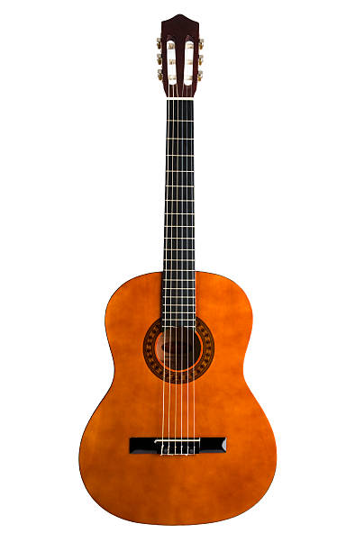

Nos guitares

Guitare classique
"La guitare classique, avec ses cordes en nylon, produit un son chaud et mélodieux, parfait pour interpréter des morceaux de musique espagnole ou des compositions classiques."
Acheter
Guitare folk
"La guitare folk, avec ses cordes en acier et sa résonance brillante, est idéale pour accompagner le chant et jouer des morceaux de blues, de country ou de pop."
Acheter
Guitare numérique
"La guitare numérique, avec ses sons échantillonnés et ses effets intégrés, offre une polyvalence inégalée pour les musiciens modernes."
Acheter
guitare à 12 cordes
"La guitare à 12 cordes, avec ses chœurs de cordes doublées, offre une sonorité riche et enveloppante, parfaite pour ajouter de la profondeur aux ballades folk ou aux morceaux rock atmosphériques."
Acheter